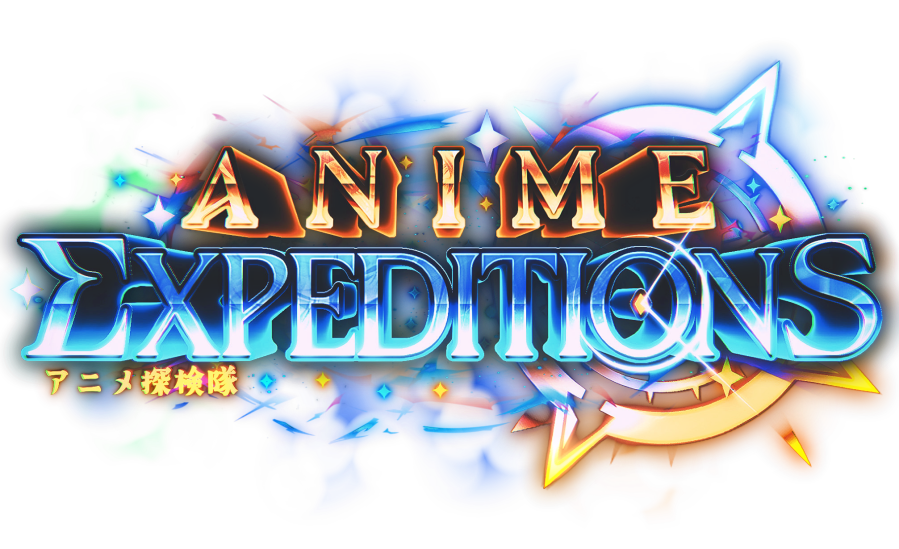
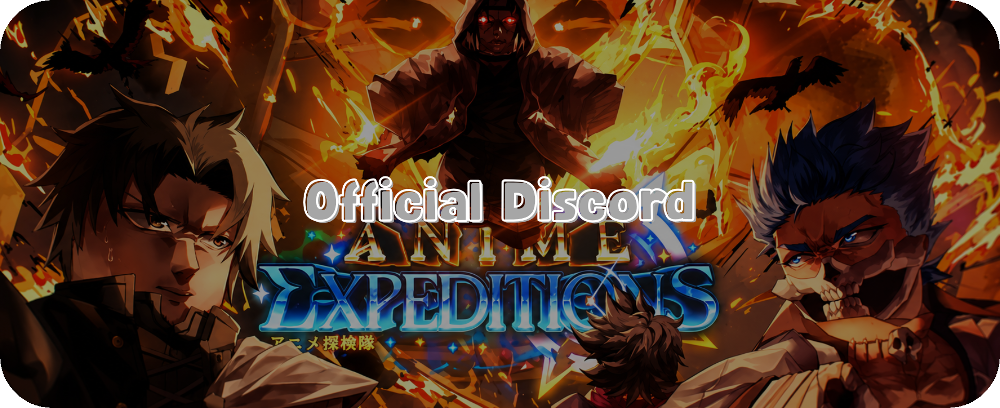

Site criado com o objetivo de ajudar a todos os jogadores de Anime Expeditions no Roblox. Clique nas 3 barrinhas do canto esquerdo superior para acessar as funcionalidades da Wiki/Guia.
Abaixo está o link para o Discord Oficial do Anime Expeditions.
